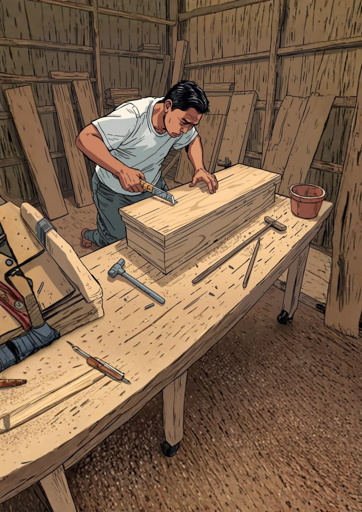
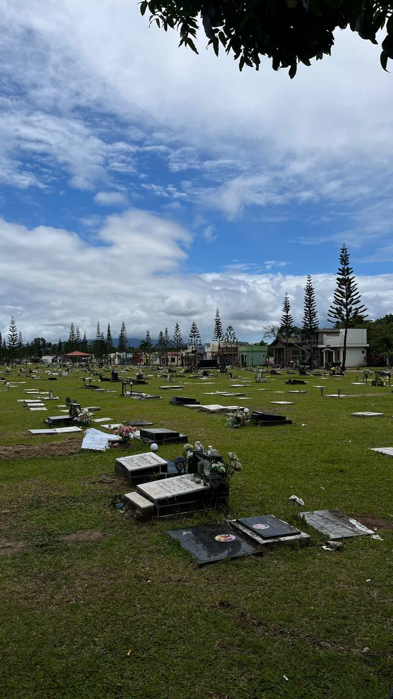
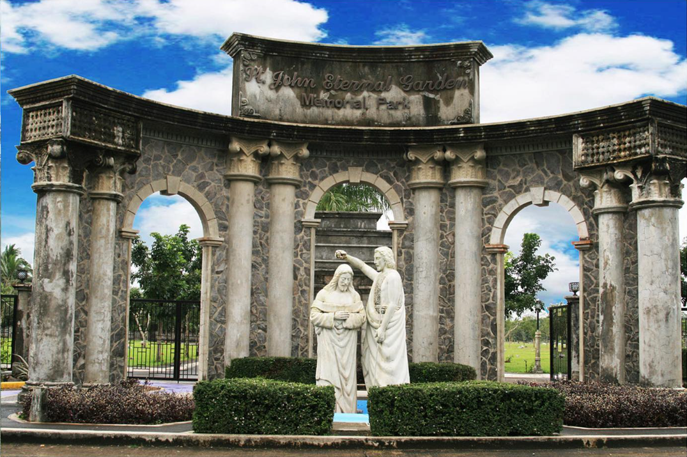

Danas

Ang mga gumagawa ng kabaong sa Daet, Camarines Norte ay nagsimula sa ganitong hanapbuhay dahil sa agarang pangangailangan ng mga tao na may mahal sa buhay na pumanaw at walang sapat na badyet para sa mamahaling kabaong. Ang ilan ay nagsimula matapos matulungan ang kamag-anak o kapitbahay na namatayan, gamit ang simpleng materyales tulad ng plywood, na kalaunan ay naging regular na gawain kapag may nagpapagawa. Ang kanilang kasanayan ay nag-ugat sa pagiging karpintero at karanasan sa paggawa ng iba pang produktong kahoy, na inangkop sa pagbuo ng kabaong. Ipinapakita nito na ang hanapbuhay ay nagsimula sa praktikal na pangangailangan at napalago sa pamamagitan ng kasanayan at pagtutulungan sa maliit na komunidad.
Ang paggawa ng kabaong ay nakakatulong bilang dagdag kita sa pamilya lalo na sa mga panahong may biglaang pangangailangan o may namamatay sa komunidad. Dahil hindi ito regular na trabaho, umaasa rin sila sa ibang gawaing karpintero kapag walang order. Ang mga hamon tulad ng kaunting mamimili o masamang panahon ay hinaharap sa pamamagitan ng paghanap ng alternatibong pagkakakitaan at pagtitipid. May ilan na nakararanas ng tahimik o kakaibang pakiramdam sa trabaho lalo na tuwing Undas, ngunit itinuturing nila itong normal at bahagi lamang ng kapaligiran ng kanilang hanapbuhay. Ipinapakita nito na ang ganitong trabaho ay episodiko ngunit mahalaga sa dagdag kita at kabuhayan.
Gawi

Ang mga gumagawa ng kabaong sa Daet, Camarines Norte ay may pang-araw-araw na gawain na nakatuon sa karpinterong trabaho tulad ng paggawa ng bahay, muwebles, at iba pang gawaing kahoy, at isinasabay lamang ang paggawa ng kabaong kapag may order. Mahalaga sa kanila ang pagtiyak na maayos at matibay ang bawat produkto upang hindi mapahiya sa pamilya ng yumao. Sa kanilang gawain, kinagawian din ang pagdarasal bago magsimula bilang paggalang sa yumao at sa trabaho. Ipinapakita nito na ang disiplina at respeto ang pangunahing gabay sa kanilang pang-araw-araw na paggawa.
Ang paggawa ng kabaong ay nagsisimula sa maingat na pagsukat ng sukat ng yumao, pagputol ng plywood o kahoy, at pagbuo ng istruktura hanggang sa ito ay mapakinis at maayos na matapos bago ibigay sa pamilya. Mahalaga ang tamang sukat, matibay na pagkakagawa, at maayos na pagtatapos upang masigurong magagamit ito nang maayos at maipakita ang respeto sa yumao. Ang proseso ay nakabatay sa kasanayan sa karpintero na iniaangkop sa espesipikong sukat at disenyo ng kabaong. Kasama rin dito ang pag-iingat sa bawat detalye at pagtiyak na maayos ang kabuuang itsura kahit simple lamang ang materyales. Ipinapakita nito na ang kalidad ng trabaho ay nakasalalay sa kasanayan, tiyaga, at paggalang sa serbisyo. Sa kanilang pamilya, may mga kasamang kapatid o kamag-anak sa ilang gawain tulad ng pagbubuhat, pagputol ng kahoy, at pag-aasikaso ng materyales, ngunit kadalasan ay pangunahing gumagawa ang mismong tagagawa.
Paniniwala
Ang mga gumagawa ng kabaong ay may ilang paniniwala na kanilang sinusunod bilang bahagi ng kanilang tradisyon at karanasan sa trabaho. Isa sa mga ito ay ang paniniwala na kapag kukuha ng sukat ng yumao, dapat mula sa paa papunta sa ulo ang pagsukat upang maging maayos ang paggawa ng kabaong at maiwasan ang malas. Bukod dito, iniiwasan din nila ang paggamit ng walang galang na pananalita habang gumagawa bilang tanda ng respeto sa patay. Ang mga ganitong gawain ay nakaugat sa kanilang paggalang sa yumao at sa kanilang propesyon, na nagbibigay ng mas maayos at maingat na daloy ng trabaho.
Hindi ito itinuturing na mahigpit na tuntunin ng lahat, ang mga paniniwalang ito ay nagsisilbing gabay upang mapanatili ang disiplina, pag-iingat, at respeto sa kanilang hanapbuhay. Ipinapakita nito na ang paniniwala ay hindi lamang simpleng pamahiin, kundi maaari ring maging paalala upang mas mapabuti ang kalidad ng paggawa at asal sa trabaho. Sa ganitong paraan, nagiging bahagi ito ng kultura ng paggawa na nag-uugnay sa tradisyon, respeto, at propesyonalismo.
Pamahiin

May mga pamahiin tulad ng hindi agad pag-uwi pagkatapos gumawa at ang pangangailangang magpagpag matapos galing lamay, na sinasabing nakaiiwas sa malas. Gayunpaman, hindi ito lubos na sinusunod ng lahat at mas inuuna pa rin ang praktikal na gawain. Ang epekto ng pamahiin sa kabuhayan ay hindi gaanong malaki dahil mas nakatuon sila sa trabaho at kalidad ng paggawa. Ipinapakita nito na ang pamahiin ay bahagi lamang ng tradisyon ngunit hindi pangunahing batayan ng kanilang hanapbuhay.
Tuklasin ang iba pang Hanapbuhay